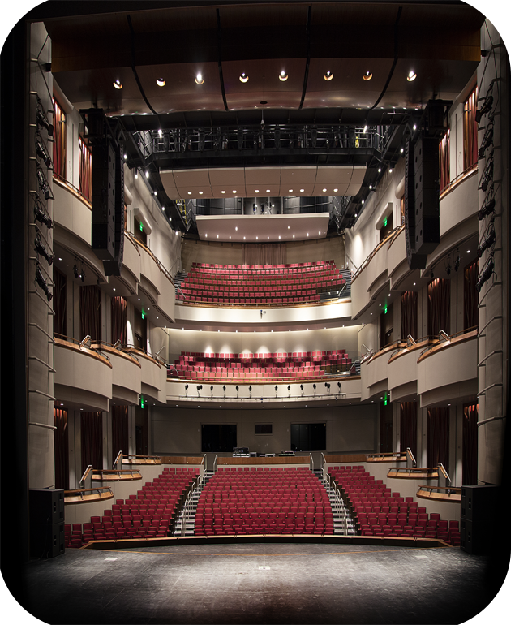
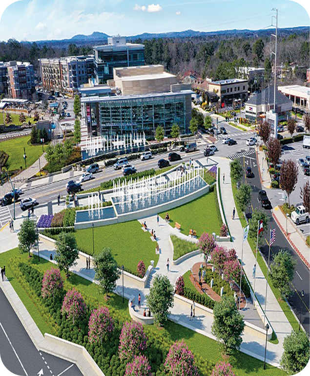

City’s Population
Sandy Springs is a non-capital city in the Georgia State. It has an estimated population of 107,198
The seventh-most populous non-capital city in Georgia.
Sandy Springs is a non-capital city in the Georgia State. It has an estimated population of 107,198
Sandy Springs city officially incorporated on December 1, 2005. The first new city in Georgia in over 45 years at the time.
Sandy Springs is located in the Northern region of Fulton County in Georgia. It is considered the northern suburb of Atlanta.
Sandy Springs is classfied as Suburban city. It suburban characteristics are its close proximity to the larger metropolitan area.
The average household income in Sandy springs,Georgia is $101,593.The per Capita income is approximately $80,857.
Sandy Springs is suburban with a more relaxed and residential feel. It is the seventh-most populous city

Sandy springs is at the North of Atlanta, bordering the city and its along the Chattahoochee River, providing access to outdoor activities.
Sandy Springs has interesting outdoor activities locations and Art activities such as Abernathy Arts Center, Performing Arts center, Photography clubs, Studio theatre, among others.
Sandy Springs has corporate headqauters of known industries like Mercedes-Benz USA, UPS, COX enterprises and residential areas, shopping centers and the Sandy Springs Performing Arts Center
Sandy springs is an attractive metropolitan area, it has a blend of suburabn and urban convenience.
It is a suburb of Atlanta in the Northern Fulton County of Gerogia.
Sandy Springs has beautiful parks and lots of green spaces. Also has excellent schools due to it is served by the Fulton County School System, which has several top-rated public schools.
Sandy Springs residents have access to wide range of employment opportunities across various industries from finance to technology due to its proximity to Atlanta.
Cultural Attractions
Diverse Dining and Shopping Options
